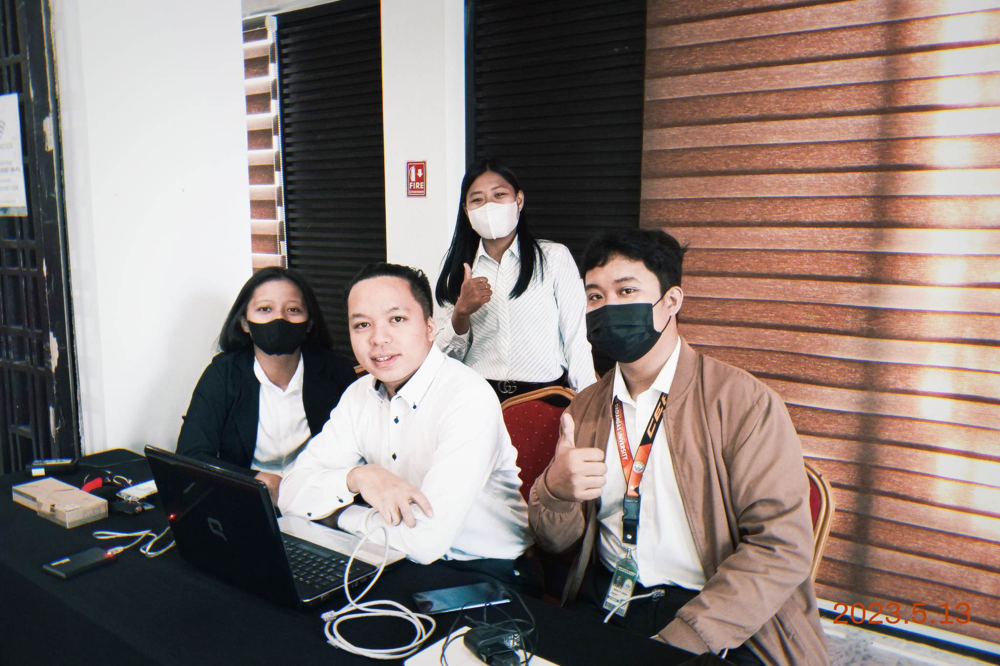
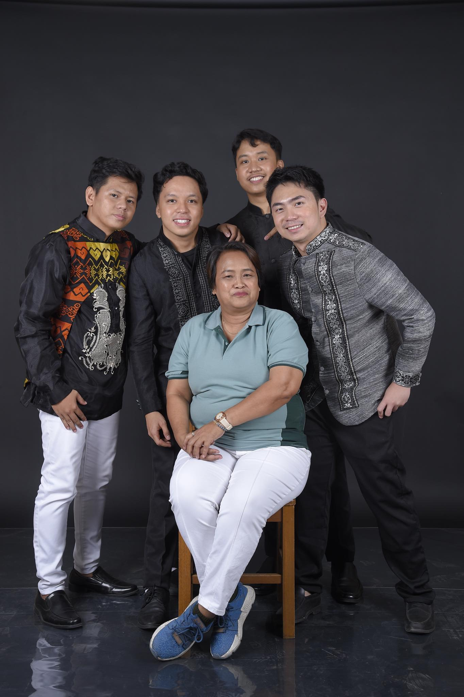
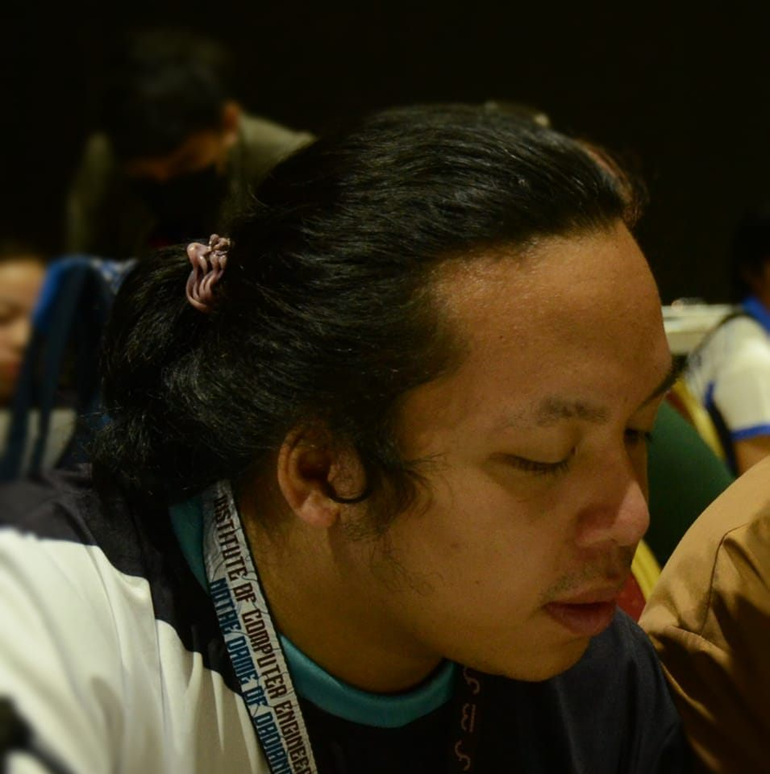
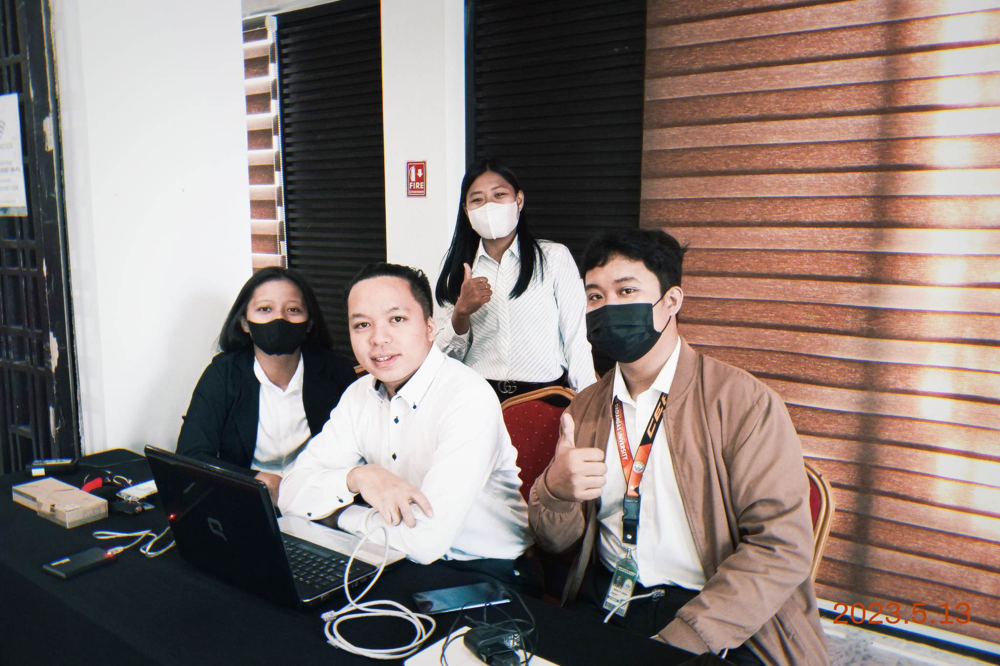
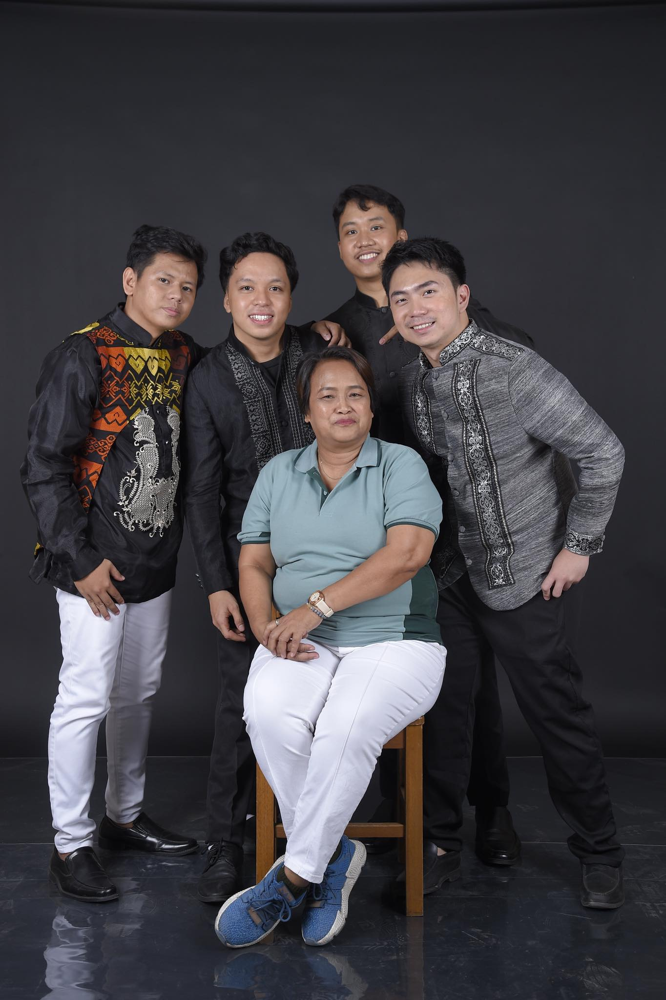
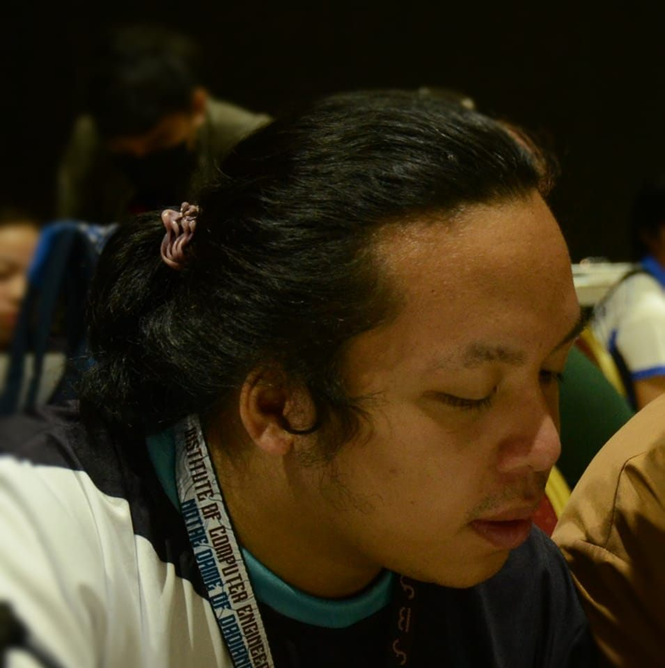

ABOUT ME
Hello! I'm Andrian Gultiano, a Computer Engineering graduate student with a passion for continuous learning and personal growth. My academic journey is currently focused on mastering full stack development as a foundational step towards a career in cybersecurity.
In addition to my studies, I have a diverse range of interests that keep me engaged and motivated. I enjoy fitness, which helps me stay disciplined and focused, and music, which fuels my creativity. I am an avid chess player and online gamer, both of which sharpen my strategic thinking and problem-solving skills. My fascination with robotics allows me to explore the intersection of hardware and software, further enhancing my technical expertise.
-
Date of birthJanuary 14, 2002
-
LanguagesEnglish, Tagalog, Cebuano
-
HobbiesGaming, Music, Fitness, Chess
-
Website
I thrive on challenges and am always eager to expand my knowledge and skills, both academically and personally. My ultimate goal is to specialize in cybersecurity, where I can apply my technical skills to protect and secure digital environments.
WHAT CAN I DO
PS: This is my career goal in the future, still developing my skills and knowledge. :D
MARKETING & PROMOTION
I will establish a strong online presence through a personal website and professional profiles on platforms like LinkedIn and GitHub. I will utilize targeted online advertisements to showcase my capabilities and attract opportunities in the tech and cybersecurity fields.
Online Presence and Advertisement
I will focus on making connections with professionals in the tech industry. I will create business cards for my services and attend various networking events and seminars to spread the word and raise awareness about my expertise. I will leverage social media platforms and online communities to promote my skills and projects, ensuring a wider reach and engagement with potential collaborators and employers.
Networking & Industry Connections